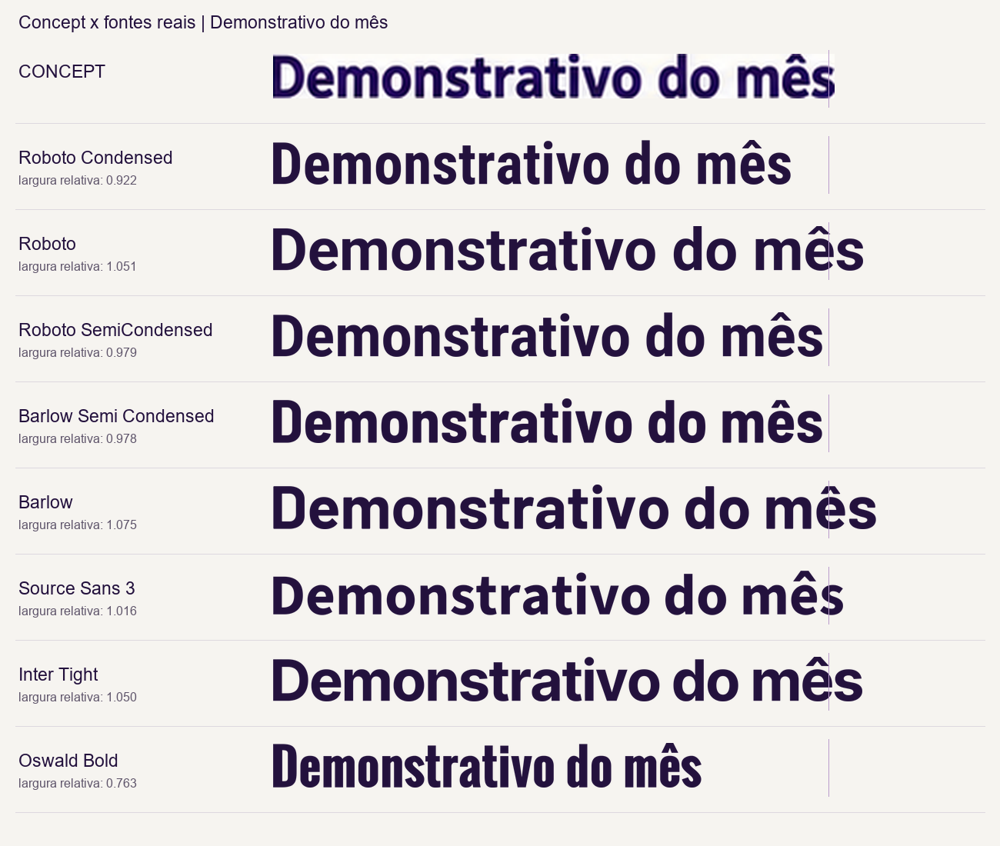
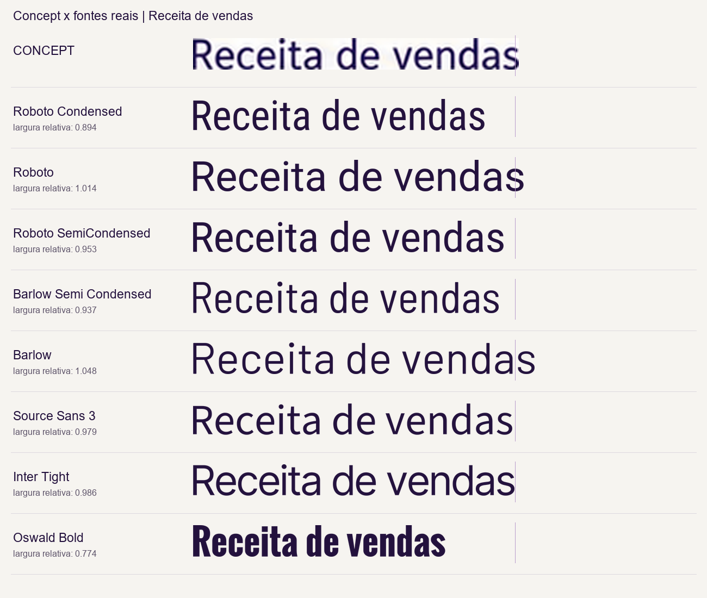

Tipografia do concept
A família Roboto, combinando largura normal e condensada, é uma aproximação prática para reproduzir o conjunto. A fonte original não pode ser confirmada.
Os registros de geração mostram que os concepts foram criados por image_gen. O prompt pediu “Typography modern sober sans serif”, sem nomear uma fonte. As letras fazem parte da imagem gerada; não há arquivo tipográfico ou metadado que identifique uma família original.
Comparei sete famílias e uma configuração adicional da Roboto variável, usando quatro trechos reais. A altura visível das letras foi igualada; as larguras naturais foram preservadas. “Roboto SemiCondensed” nas pranchas significa Roboto com eixo Width=87.5, e não uma família independente. As larguras relativas descrevem medidas, não graus de confiança.
Para uma reprodução: Roboto Bold no cabeçalho e nos valores, Roboto Regular no corpo e Roboto Condensed Medium/SemiBold nos rótulos e botões estreitos. Barlow Semi Condensed Bold também se aproxima de alguns títulos internos; Source Sans 3 se aproxima de algumas formas do cabeçalho e corpo. Os resultados variam entre amostras e não comprovam uma fonte única.
Fontes oficiais: Roboto · Roboto Condensed · Barlow Semi Condensed. Registro da análise.
Título interno

Corpo da tabela
